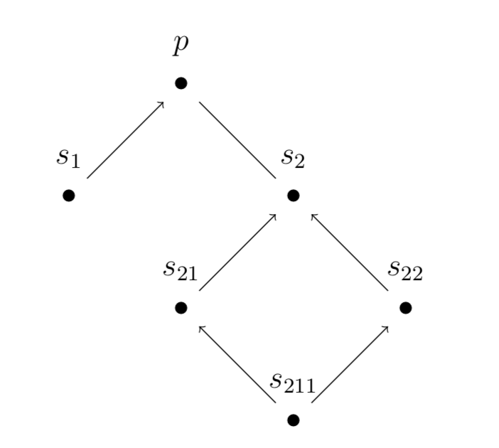
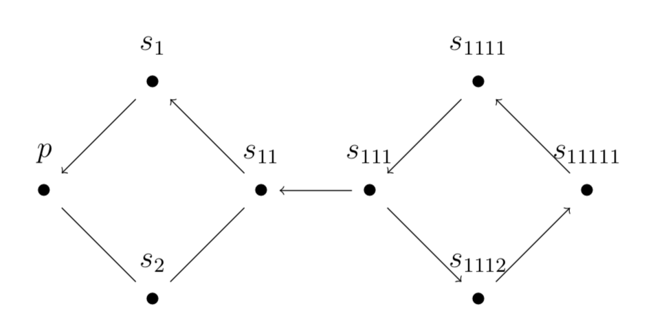

Infinite Cycles and the Graphical Approach to Epistemic Justification
Brett Mullins
5/17/2019
SEP Conference 2019
Overview
Overview
Over the past decade, great strides have been made in analyzing the structure of epistemic justification mathematically and probabilistically
- Peijnenburg (2007) starts a research program studying the probabilistic properties of infinite regresses
- Berker (2015) provides a graph theoretic account of foundationalism, coherentism, and infinitism
- The Graphical Approach to Epistemic Justification
Overview
Extend the graph theoretic account using new results from graph theory on infinite cycles
| Bounded Paths | Infinite Paths | |
|---|---|---|
| Acyclic | Foundationalism | Infinitism |
| Edge Cover in Cycle Space | Coherentism | Infinite Coherentism |
Contents
- Graph Preliminaries
- Infinite Cycles
- Graphical Approach
- Support Graphs
- Foundational & Coherentism
- Infinitism & Infinite Coherentism
Graph Preliminaries
Example
What is a Graph?
A graph is a set of vertices and edges: $G = (V, E)$
Every directed graph $G$ has an underlying undirected graph $G'$
$H = (V_H, E_H)$ is a subgraph of $G$ if $V_H \subset V, E_H \subset E$
Example: $( \{ a,b,c \} , \{ab, bc, ca\})$
Edge Covers
An edge cover of $G$ is a subgraph $H$ where every vertex of $G$ is incident to an edge in $H$.
Example:
- Removing $ca$ gives an edge cover
- Removing $cd$ and $ed$ does not
Paths & Cycles
A path a path is a sequence of edges connecting a distinct vertices
Example: $caed = (ca, ae, ed)$
The length of a path is the number of vertices in the path
A cycle is a path except that the first and last vertices are the same
Example: $abca = (ab, bc, ca)$
Vertex Degree
The degree of a vertex $x$ is the number of edges incident to $x$
- the in-degree of a vertex $x$ as the number of incident edges incoming to $x$
- the out-degree of a vertex $x$ as the number of incident edges outgoing from $x$
Cycle Space
The cycle space of $G$, $\mathcal{C}(G)$, is the closure of the set of cycles for $G$ by edge disjoint union
Theorem: Let $H = (V, E)$ be a subgraph of a finite undirected graph $G$. Then $E \in \mathcal{C}(G)$ if and only if every vertex of $G$ has even degree in $H$.
Infinite Cycles
What is an Infinite Cycle?
The double ray graph
Does the theorem work for infinite graphs?
- Any vertex can be reached from any other vertex
- Each vertex has degree two
- No edge is repeated
“...common sense tells us that this can hardly be right: shouldn’t cycles be round?” - Diestel (2004)
Ends of an Infinite Graph
The double ray graph
A connected component of a graph is a connected subgraph that is maximal
An end of a graph to be the set of rays that belong to the same connected component after any finite set of vertices are removed
Example: the double ray has two ends
Ends & Connectedness
The one-ladder graph
Think of ends as points at infinity
A graph $G$ is topologically connected if there exists a path between any two vertices that is either finite or traverses ends
A ray is a path from a vertex to an end
The degree of an end is the maximum number of edge disjoint rays contained in the end
Infinite Cycles
The one-ladder graph
Theorem: Let $C$ be a subgraph of a locally finite graph $G$. Then $C$ is a cycle just in case $C$ is topologically connected and the degree of every vertex and end is two.
Infinite Cycles
The one-ladder graph
The infinite cycle contained in the one-ladder graph
Infinite Cycle Space
The one-ladder graph
Theorem: Let $G = (V, E)$ be a locally fininte graph. Then $E \in \mathcal{C}(G)$ if and only if every vertex and every end of $G$ has even degree.
Graphical Approach to Epistemic Justification
Support Graphs
Let vertices represent beliefs and directed edges represent relations of support between beliefs
Let $G = (V, E)$ be a support graph
Constructing a support graph (informally):
- Let a belief $p$ be given
- For beliefs $s_0, s_1, \ldots$ supporting $p$, add an edge from $s_i$ to $p$ for all $i$
- Repeat for each of $s_0, s_1, \ldots$ that have not appeared before and so on
Support Graph Properties
Example: If $p$ and $q$ are beliefs and $p$ supports $q$ then the support graph for $p$ is a subgraph of the support graph for $q$
Importantly, there is much we do not know:
- Does construction terminate in finite or $\omega$ steps?
- Connected?
- Acyclic?
Theories of Justification
These theories make assumptions on properties for support graphs
- Are paths in $G$ bounded or unbounded?
- Are there no cycles in $G$ or can $G$ be deconstructed into cycles?
Foundationalism
Justification and knowledge are ultimately derivative from a set of basic or foundational elements whose justification does not depend in turn on that of anything else. - BonJour (2010)
Foundationalism imposes two conditions on $G$:
- The length of the shortest path between $v, p$ for all $v \in V$ is bounded
- $G$ is acyclic
Foundationalism
Coherentism
beliefs can only be justified by other beliefs...what justifies beliefs is the way they fit together: the fact that they cohere with each other - BonJour (2010)
Coherentism imposes two conditions on $G$:
- The length of the shortest path between $v, p$ for all $v \in V$ is bounded
- There is an edge cover of $G$ in $\mathcal{C}(G)$
Coherentism
Infinitism
Infinitism borrows both from foundationalism that justification cannot be circular and from coherentism that only beliefs can justify other beliefs
Infinitism imposes two conditions on $G$:
- For each vertex $v \in V$, there is an infinite path to $p$ containing $v$
- $G$ is acyclic
Infinitism

Infinite Coherentism
Infinite Coherentism imposes a single condition on $G$:
- There is an edge cover of $G$ in $\mathcal{C}(G)$
Infinite Coherentism
The one-ladder graph
Interpretation: two indefinite reason giving processes go to/from the same end when they are appropriately connected or coherent
Conclusions
Conclusions
- Support graphs are a useful tool for exploring the properties of epistemic justification
- By introducing infinite cycles, we can consider a fourth solution to the regress problem
References
- Peijnenburg, Jeanne, (2007). “Infinitism Regained.” Mind 116(463), 597-602.
- Berker, Selim (2015). “Coherentism via Graphs.” Philosophical Issues 25(1), 322-352.
- Diestel, Reinhard (2004). “On Infinite Cycles in Graphs: Or How to Make Graph Homology Interesting.” The American Mathematical Monthly 111(7), 559-571.
- BonJour, Lawrence (2010). Epistemology: Classic Problems and Contemporary Responses, 2nd Edition, Rowman & Littlefield.